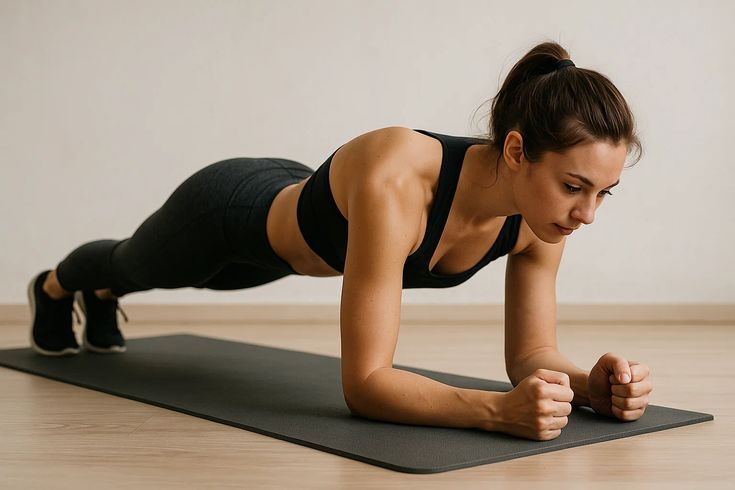

01
Movement Assessment
Your physiotherapist observes movement, posture, mobility and functional tasks to understand your individual needs.
Movement-focused physiotherapy designed to understand how different parts of the body work together during everyday movement and physical activity.

Kinetic Chain Therapy focuses on the relationship between different joints, muscles and movement patterns. The body works as an interconnected system rather than as separate individual parts.
Your physiotherapist may assess how movement at one area influences other areas of the body and develop an individualised rehabilitation programme according to your needs.
Your movement patterns are assessed to identify areas that may need attention.
Different joints and muscles are considered as part of the connected movement system.
Exercises may be selected to support coordination, strength and functional movement.
Kinetic Chain Therapy is a movement-based approach that considers how muscles, joints and body segments interact during movement. Treatment is individualised according to clinical assessment and functional goals.
Your physiotherapist observes movement, posture, mobility and functional tasks to understand your individual needs.
The relationship between different joints and muscles may be considered during your assessment and treatment.
Exercises can be incorporated to help develop strength, coordination and movement control.
Your rehabilitation programme may include different movement and exercise strategies depending on your assessment and goals.
Appropriate mobility exercises may be used to support comfortable and controlled movement.
Targeted strengthening may help support muscles involved in functional movement.
Balance activities may be included to improve movement control and stability.
Exercises may focus on coordination between different body segments during movement.
Functional movement exercises may be selected according to your everyday activities and goals.
Controlled movement practice may help develop awareness and confidence during physical activity.
Kinetic chain principles may be incorporated into rehabilitation when understanding connected movement is relevant to a person's individual functional goals.
Helps you understand how different body areas contribute to movement.
Rehabilitation may include exercises that support strength during functional activities.
Movement exercises may help develop coordination between different body segments.
Treatment and exercise selection are based on your assessment, abilities and goals.
Discuss your symptoms, activities, concerns and rehabilitation goals.
Your physiotherapist assesses movement, mobility, strength and functional tasks.
Appropriate exercises may be selected based on your individual assessment.
Your programme may be adjusted as your strength, control and functional ability develop.
Here are some general questions about Kinetic Chain Therapy. Your physiotherapist can provide advice based on your assessment.
Ask Our Team →The kinetic chain describes the way different joints, muscles and body segments interact to produce movement.
Treatment suitability depends on your condition, symptoms, functional requirements and clinical assessment.
Exercise may form an important part of a kinetic-chain-focused rehabilitation programme when appropriate.
Yes. Depending on your assessment, movement training may be combined with other physiotherapy interventions.
An assessment is recommended so your physiotherapist can understand your movement patterns and develop an appropriate rehabilitation plan.
Speak with our physiotherapy team to understand whether Kinetic Chain Therapy may be appropriate for your rehabilitation needs.